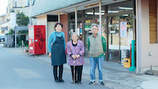
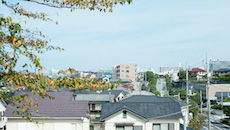
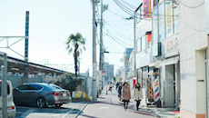
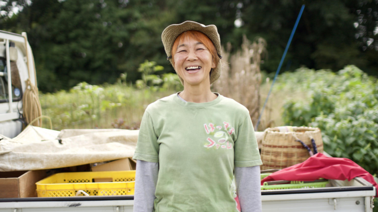

映像
四街道の何気ない日々、働く人、子育てをするお母さん、学校で学ぶ子供、色んな人の生活を集めて映像にまとめています。
もっと見る写真集
2015年秋から2016年秋にかけて撮りためた、四街道市でのくらしの様子を収めた写真集です。
- 
- 
- 
まちのストーリー

絆と元気を育む農園
はっするファーム/嶋川美穂さん
野菜を育む大地の薫り、花粉を運ぶ蜜蜂の羽の音、全身で感じる太陽の温もり。これは大日にある農園、「はっするファーム」での日常です。今回は元気いっぱいの笑顔で多くの人を惹きつける嶋川さんが農業の世界に魅了されるまでの人生とともに、はっするファームの切り拓いてきた道をたどります。
もっと見る